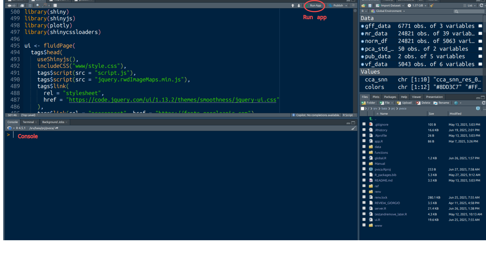

Introduction
PlaViSca is a free, open-source, interactive R Shiny application designed for the analysis and visualization of single-cell RNA sequencing (scRNA-seq) data from Plasmodium vivax. It empowers researchers, especially those in the malaria research community, to explore and interpret complex datasets through an intuitive, code-free interface.
Key features:
Explore scRNA-seq data from P. vivax across different parasite and infection stages
Filter and export metadata
Dynamic, interactive visualizations with 2D or 3D options
Gene expression viewer for stage-specific or gene-specific profiling
Filter and subset data by metadata variable such as condition, stage, species, and more
Embeddings viewer (PCA, UMAP, t-SNE) for both integrated and unintegrated data
Downloadable metadata and plots for downstream analysis
Hosting and access
PlaViSca is hosted online, providing users with direct access to the web application via the following website: PlaViSca Web Application. This platform serves as the central hub for exploring and analyzing scRNA-seq data without requiring local installation.
For users who prefer to run the application on their local computer, the following steps provide detailed guidance on setting up PlaViSca locally.
Local installation
PlaViSca is compatible with macOS, Windows, and Linux operating systems. Follow the steps below to set up the application on your system
Requirements
R: Version 4.5 or later (Download R)
RStudio: Version 2025 or later (Download RStudio)
Git: Version 2.43 or later (Download Git)
Recommended RAM: 8GB or more
Getting source code from the repository
git clone https://github.com/Sopheap15/pvsca.git
Struture of the project directory:
.
├── app.R # Sources ui.R and server.R
├── data/ # Store input datasets
├── functions/ # Custom functions and preprocessing scripts
├── global.R # Loads data and functions into the global environment
├── pvsca.Rproj # RStudio project file
├── README.md # Project overview and installation instructions
├── manual.R # User manual for effective using PlaViSca web application
├── ref/ # Reference data directory such as genome annotation
├── renv/ # R environment directory managed by `renv`
├── renv.lock # Snapshot of R packages used
├── server.R # Shiny server logic
├── ui.R # Shiny user interface definition
└── www/ # Static assets (images, CSS, JavaScript)
After cloning the repository, open the PlaViSca directory or navigate to it using the terminal by running cd PlaViSca.
Gene expression data and metadata
PlaViSca requires gene expression data and metadata files. These files can be downloaded from XXX. Ensure that the data is formatted correctly and adheres to the application’s requirements.
Preparing data
Ensure the gene expression data is in
.rdsformat and save in three files normliazed_df.rds, scale_df.rds, cleaned_dataset.rdsMetadata should be provided in a compatible format (e.g.,
.csvor.rds).Place the files in the
data/directory within the project folder.
Once the data is in place, open the pvsca.Rproj file. This action will launch RStudio and automatically set the working directory to the appropriate project folder, preparing the environment for running the application.
Install dependencies
PlaViSca requires several R packages to be installed. There are two options to install the required dependencies in Rstudio console:
Option A: use renv
install.packages("renv")
renv::restore()
Option B: manual installation
To install specific package version (which is recommended), we have to install remote package:
install.packages("remote")
remote::install_version("shiny", version = "1.10.0")
remote::install_version("shinyjs", version = "2.1.10")
remote::install_version("shinycssloaders", version = "1.1.0")
remote::install_version("plotly", version = "4.10.4")
remote::install_version("DT", version = "0.33")
remote::install_version("RColorBrewer", version = "1.1.3")
remote::install_version("tidyverse", version = "2.0.0")
remote::install_version("later", version = "1.4.2")
Run Application

Option A: from RStudio
Open either
app.Rorserver.Rorui.RClick the Run App button in the top-right of the Rstudio see in Figure 1.
Option B: from the command line terminal
R -e "shiny::runApp('app.R', launch.browser = TRUE)"